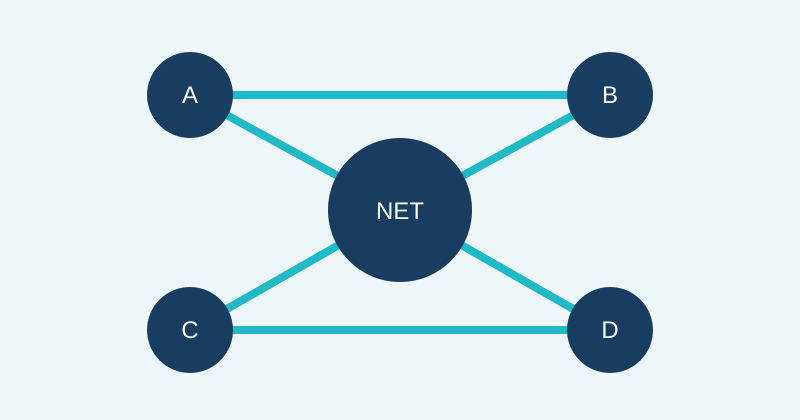

Telecom Tower & Site Services
Support for planning, construction coordination, installation and maintenance activities at telecommunications sites.
Integrated services for telecom infrastructure, network power and internet connectivity.
Support for planning, construction coordination, installation and maintenance activities at telecommunications sites.

Power supply and backup arrangements to help keep base station equipment operating reliably.

Internet access options and data packages for customers, teams and organizations.
Basic network setup, equipment connection, cabling coordination and connectivity support.
Technical guidance, troubleshooting assistance and service follow-up for network-related needs.
Initial assessment and practical recommendations for telecom, internet and power requirements.
Telecommunications equipment needs stable power to provide continuous service. Vital Byte's power-related activities are designed to support telecom sites and their operating requirements.
Request Information